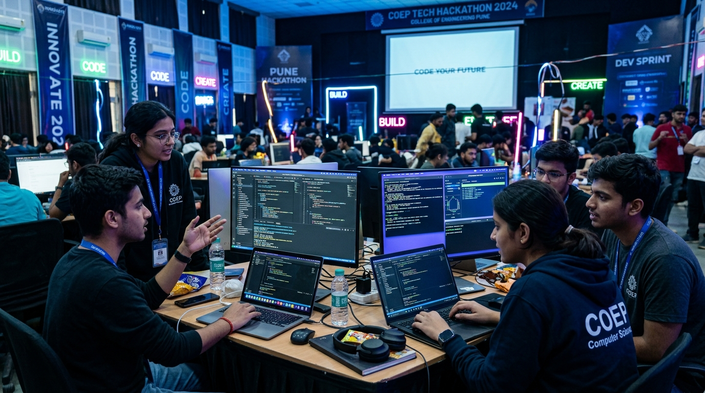
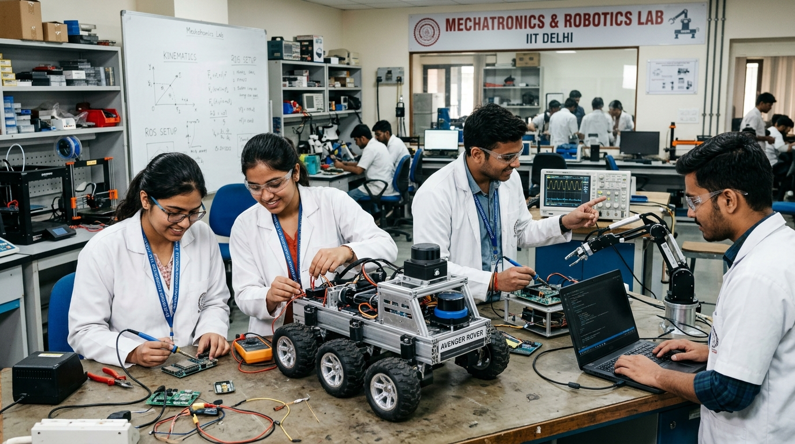

Your Campus, Your Voice,
Connected in Real Time.
Welcome to Campus Connect @ AIT Pune — the unified digital commons uniting students, faculty, and distinguished alumni. Discover student clubs, track flagship fests like Solutions & Aakriti, celebrate milestones, and connect directly with our global alumni network.
One Campus, Tailored Portals
Access customized tools, community feeds, and verified collaboration channels designed specifically for your role at AIT Pune.
Student Portal
Connect with batchmates, join technical clubs (OSS, Robotics, BAJA, Coding), and collaborate on hackathon projects.
- ✓ Department course materials & academic notes
- ✓ Quick club registrations & project teaming
- ✓ Innerve Hackathon teaming & Solutions project expo
- ✓ Direct contact access to verified AIT alumni
Faculty & Teachers
Publish department notices, manage lab schedules (3D PLM, Robotics), and supervise student capstone projects.
- ✓ Department announcement & circular broadcasts
- ✓ Research lab project & patent application oversight
- ✓ Student project supervision & advisory slots
- ✓ Autonomous curriculum committee forums
Alumni Network
Connect with fellow AITians globally, share job referrals, and respond directly to student inquiries.
- ✓ Searchable global alumni directory & chapters
- ✓ Post job openings & internship referrals for AITians
- ✓ Direct contact channel for student career questions
- ✓ Incubation grants & campus startup support
Student Clubs & Societies
Life at the Army Institute of Technology thrives through student-led innovation, technical exploration, and creative expression. From premier coding and software bodies like the Open Source Software (OSS) Club to mechatronics in the 3D PLM Robotics Lab, motorsport engineering with Team BAJA, cultural performing arts (Aakriti), varsity athletics (Pace), and startup incubation at E-Cell — our student societies shape well-rounded engineers, leaders, and problem solvers.


Comprehensive club rosters, project repositories, event registration links, and society bylaws are accessible to verified campus members. Sign in with your student account to explore and join clubs.
Latest Campus News & Updates
Stay informed with verified AIT Pune announcements, academic calendars, technical symposium circulars, and placement reports.
Annual Technical Symposium 'Solutions 2026' & Innerve Hackathon Dates Released
The Student Council and Technical Board have officially announced the schedule for Solutions 2026. The 3-day national symposium will host the iconic 36-hour Innerve Hackathon, RoboWars arena, competitive coding sprints, and project expos.
Robotics Club & 3D PLM Lab Develop Autonomous Rover for National Challenge
Student engineers in the 3D PLM innovation facility successfully tested lidar-guided autonomous navigation and obstacle avoidance.
AIT Pune Placement Season 2025-26: Over 92% Batch Placed with Top Tech Firms
Leading product engineering MNCs, cloud leaders, and automotive giants recruit AIT students across Computer, IT, E&TC, and Mechanical branches.
Stage Set for 'Aakriti 2026' — AIT's Flagship Cultural Festival
Auditions commence for the Inter-College Battle of the Bands, Nukkad Natak street drama, and choreography night.
Autonomous Curriculum & Minor Elective Registration Window Open
Students can select interdisciplinary electives across AI/ML, Cyber Security, Robotics Automation, and VLSI systems.
Wall of Fame & Achievements
Celebrating the groundbreaking technical victories, research accomplishments, and sports laurels earned by AIT Pune students and faculty.
Autonomous & NBA Accredited
Recognized for premier academic rigor, world-class laboratory infrastructure, and research-driven engineering education.
National Smart India Hackathon
AIT Pune student coding squads repeatedly bag top honors and cash prizes across national SIH software & hardware editions.
Published Research & Patents
Faculty and student co-authored papers featured in IEEE, Springer, and ACM indexed international conferences.
Pace & Inter-University Sports
AIT athletes brought home championship trophies in Football, Basketball, Volleyball, Squash, and Athletics.
Distinguished Alumni Network
AIT Pune graduates hold key leadership roles across top global tech firms, research organizations, defense establishments, and high-growth startups. Connect directly with our alumni.
Neha Sharma
Major Rohan Bakshi (Retd.)
Dr. Siddharth Deshmukh
What are you most excited for this semester at AIT?
Cast your vote as a guest explorer or logged-in student. See what the AIT Pune campus community is buzzing about in real time!